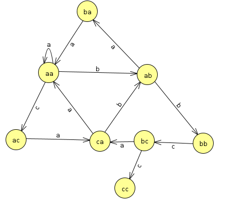

Homework 3: Markov Chains for Text Processing
Chris Tralie
Overview / Logistics
The purpose of this assignment is to introduce you to natural language processing via Markov chains, which are incredibly powerful tools for representing sequences mathematically. First, you will use this tool to classify text, seeing how it performs at telling whether Clinton or Trump was speaking during the 2016 presidential debates, whether a text is spam or ham, or whether a movie review is positive or negative. You will also use this tool to synthesize new text in the style of a corpus of text. For instance, you'll be able to synthesize new, previously unheard Spongebob quotes. You can even mix styles together (such as my Ursinus sith lord). We will have a class gallery of such "Markov hybrids" that students devise.
Learning Objectives
- Implement a statistical technique for analysis and synthesis of natural language.
- Follow the train set / test set paradigm for evaluating the performance of an algorithm.
- Search for optimal model parameters, and explore how these parameters vary across datasets.
- Use jupyter notebooks to organize experiments into a computational essay.
- Reflect on the potential harms of technology that you've created, and what can be done to mitigate ethical threats.
What to submit
Finally, submit a comment on canvas with the answer to the following questions:
- Your markov.py file and the jupyter notebooks you created in the experimental section.
- Your poetic statement, a title that should go along with it, and what name/pseudonym you would like to use? (results will be displayed on the class web site).
- Your ethics reflection.
- How long did this take you? I'm simply using this to gauge if things are too easy, too hard, or just right.
- Any feedback to help improve the assignment for future students? Alternatively, if there's nothing you would change, let me know what specifically worked for you about it so I know to keep doing things like that.
- Any other concerns that you have. For instance, if you have a bug that you were unable to solve but you made progress, write that here. The more you articulate the problem the more partial credit you will receive (fine to leave this blank)
Background: Markov Chains for Text Representation
Human languages, often referred to as ``natural languages,'' are rich and full of meaning. Compared to computer languages, they are much harder to automatically interpret and process. However, as you will see in this assignment, we can make some progress at representing natural languages using a few simple statistical ideas.
In this assignment, our focus will be on creating an algorithm to capture the style of some given text from a set of examples. Then, we will be able to classify documents or "synthesize" (create new text) in this style.
Zero-Order Statistical Modeling
We'll start by discussing synthesis. The simplest possible thing we could do to model text statistically is try to match the frequency of occurrence of the characters in a document. For example, if we use a collection of spongebob quotes, we find that we have the following character counts across all quotes:
Then, we can then try drawing characters according to these counts. For example, we'd be more likely to draw an 'i' than we would to draw a 'z', and we're more likely to get a space ' ' than any other character. If we draw 100 characters independently with these probabilities, we get text that looks like this:
- onc 5donps fwyce agoti'tm ne edoi a e Iueogd ei IralcrltItmo.g mimyheat tgesue nwierayekra fP he
- l rOxttsu Iogrmetucafo ewa khtois!e bttcatnht,r Cyfhr Pngkswhnwl oiet lyoatrl atumr e lenriadb Ie
- Gi dyuh b .di Po mmceooet'd'nne'n gdo dkimeo aanti is0o i 'uttj'Sstopfsasep!. mosltayaaSso?lraV l
Interestingly, the size of the "words" looks about right since we are more likely to choose a space than any other character, but they are total gibberish. This is because the process has no memory; each character is chosen completely independently from the character preceding it.
K-Prefixes
As it turns out, if we have just a very simple memory of a few characters, we can do a much better job at synthesizing sequences. Surprisingly, we can shoehorn the "memoryless" Markov chain framework from our class exercise into having a small memory if we change our notion of what a "state" is. In particular, a "state" will now be a small sequence of characters of length k instead of just a single character. This is referred to as a k-prefix.
As an example, let's consider that we had the string aaabaaacaabbcabcc. If we took all of the 2-prefixes of this string, we would have the following counts
In the Markov framework, we also have transitions that occur every time a new character is seen. On the above example, they would look like this:
Let's think about what these mean as transitions in the Markov chain. If we're at aa and we get an a, then we stay at aa. If we get a b, then we chop the a off of the left and move to ac. If we're at ca and we see a b, we chop the c off of the left and move to ab. And so on. Drawn as a state diagram, all such transitions look like this:
One issue with this is that it runs into a dead end at cc. This is fine if we're analyzing probabilities, but if we're doing a random walk through our model to synthesize text, we'll run into a dead end there. To make it so we can keep going, we'll loop the text around by padding the end of the string with the first k characters. In this example, this means padding the original string with the first two characters, so we create the prefixes of the string aaabaaacaabbcabccaa. That leads to the following counts for the prefixes and transitions
Notice how the count of ca->a has gone up by 1, and now there is a transition from cc->a. Now there are no dead ends in the state transitions, and we can walk through this model randomly forever to generate random strings.
Below is a more in-depth example with some real text from the spongebob quotes text file provided with the assignment
Spongebob Example
As an example here are all of the counts of the 4-prefix 'you ' in the Spongebob text:
| New Sentence | Character Counts for 'you ' After Sentence |
| Gary, go away, can't you see I'm trying to forget you? | {"s":1} |
| Why are you mad? Because I can't see my forehead! | {"s":1, "m":1} |
| Can you take the crust off my Krabby Patty? | {"s":1, "t":1, "m":1} |
| Did you see my underwear? | {"s":2, "t":1, "m":1} |
| Well, it makes you look like a girl! | {"s":2, "t":1, "l":1, "m":1} |
| East, oh I thought you said Weest! | {"s":3, "t":1, "l":1, "m":1} |
| That's it, mister, you just lost your brain priveleges! | {"s":3, "t":1, "j":1, "l":1, "m":1} |
| I wumbo, you wumbo, he she we, wumbo, wumboing, wumbology, the study of wumbo? | {"s":3, "t":1, "w":1, "j":1, "l":1, "m":1} |
| It's not you that's got me... it's me that's got me! | {"s":3, "t":2, "w":1, "j":1, "l":1, "m":1} |
| Why don't you ask CowBob RanchPants and his friend Sir Eats-a-lot? | {"a":1, "s":3, "t":2, "w":1, "j":1, "l":1, "m":1} |
| Krusty Krab Pizza, it's the pizza for you and meeeee! | {"a":2, "s":3, "t":2, "w":1, "j":1, "l":1, "m":1} |
| If you believe in yourself, with a tiny pinch of magic all your dreams can come true! | {"a":2, "b":1, "s":3, "t":2, "w":1, "j":1, "l":1, "m":1} |
| Goodbye everyone, I'll remember you all in therapy. | {"a":3, "b":1, "s":3, "t":2, "w":1, "j":1, "l":1, "m":1} |
| Don't you have to be stupid somewhere else? | {"a":3, "b":1, "s":3, "t":2, "w":1, "h":1, "j":1, "l":1, "m":1} |
| Squidward, you can't eat all those patties at one time! | {"a":3, "b":1, "s":3, "c":1, "t":2, "w":1, "h":1, "j":1, "l":1, "m":1} |
| I'll have you know, I stubbed my toe last week, while watering my spice garden, and I only cried for 20 minutes. | {"a":3, "b":1, "s":3, "c":1, "t":2, "w":1, "h":1, "j":1, "k":1, "l":1, "m":1} |
| Squidward, you and your nose will definitely not fit in. | {"a":4, "b":1, "s":3, "c":1, "t":2, "w":1, "h":1, "j":1, "k":1, "l":1, "m":1} |
| Who you callin' pinhead? | {"a":4, "b":1, "s":3, "c":2, "t":2, "w":1, "h":1, "j":1, "k":1, "l":1, "m":1} |
| Gee Patrick, I didn't know you could speak bird. | {"a":4, "b":1, "s":3, "c":3, "t":2, "w":1, "h":1, "j":1, "k":1, "l":1, "m":1} |
| Any particular reason you took your pants off. | {"a":4, "b":1, "s":3, "c":3, "t":3, "w":1, "h":1, "j":1, "k":1, "l":1, "m":1} |
| Let me get this straight, you two ordered a giant screen television just so you could play in the box? | {"a":4, "b":1, "s":3, "c":4, "t":4, "w":1, "h":1, "j":1, "k":1, "l":1, "m":1} |
| I'd hate you even if I didn't hate you. | {"a":4, "b":1, "s":3, "c":4, "t":4, "e":1, "w":1, "h":1, "j":1, "k":1, "l":1, "m":1} |
| You're a man now, Spongebob, and it's time you started acting like one. | {"a":4, "b":1, "s":4, "c":4, "t":4, "e":1, "w":1, "h":1, "j":1, "k":1, "l":1, "m":1} |
| Can you give Spongebob his brain back, I had to borrow it for a week. | {"a":4, "b":1, "c":4, "e":1, "g":1, "h":1, "j":1, "k":1, "l":1, "m":1, "s":4, "t":4, "w":1} |
Synthesizing Text
Now, let's say we do the following steps, starting with the prefix 'you ':- We randomly choose one of the characters that's to follow, and we choose a 'c'
- We then slide over by one character move onto the next prefix, which is 'ou c'. We then see the character counts {"a":2, "o":2} for that prefix.
- We make another random choice at this point, and we draw the character 'a'. So then we slide onto the prefix 'u ca', and we see the counts {"l":1, "n":1} for that prefix.
- We now make a random choice and draw the character 'n'. We then slide over to the prefix ' can', and we see the counts {" ":3, "'":4}
- We now make a random choice and draw a space, so we slide over to the prefix 'can ', and we see the counts {"c":1, "h":1, "I":1}
- We now make a random choice of an h, moving us to the prefix 'an h', and so on and so forth
- you can have facial hair!Now than 24, 25.You don't need a new I stupid
- you can have to die right.You know the true!If your secrets is hot burns down
- you can have feet?Since who can't you.I'd hate you and I'm absorbing
- you can have to be alright.If I wish is nothere ther.No, Patty?
As you can see, this text is starting to make a lot more sense than choosing each character independently, even with a very short memory.
The Probability of A Sequence
In addition to synthesizing text in a model trained on k-prefixes from a particular set of documents, we can assess how likely a different document is to be in the style that we've modeled with our Markov chains. To do this, we will compute the probability of a particular sequence given a model. Markov chains have a simplifying assumption of independence that will help make this easier to compute. In particular, the next character is chosen only based on the current prefix, and none of the previous prefixes influence this decision.
Independent events are nice to work with because the probability of independent events occurring is a simple multiplication. For example, it's reasonable to assume that the type of weather in Beijing on a particular day is independent of the weather in Collegeville. So if the probability it rains in Collegeville is 0.4 and the probability it rains in Beijing is 0.6, then the joint probability of both occurring is 0.4 x 0.6 = 0.24
To compute the probability of a particular sequence of characters, we must first compute the probability that each character was drawn under our model, and then we may compute the joint probability of the entire sequence by multiplying them together. The probability of a particular character c preceded by the prefix p is given as
\[ p(c) = \frac{N(p.c) + 1}{N(p)+S} \]
where
-
N(p)is the number of times the prefix occurs in the model (which can be 0) -
N(p.c)is the number of times the charactercfollows prefixp(which can be 0, and which is automatically 0 if the prefix doesn't exist in the model) -
Sis the size of the alphabet in the model (i.e. the number of unique characters across all prefixes)
N(p.c) and N(p) are 0, and the probability is 1/S
There is a slight numerical issue with the above scheme, however. Since there are many characters in most sequences of interest, and since the probabilities of each character are small, we can run into arithmetic underflow where the multiplication of many small numbers ends up just bottoming out at zero numerically. To get around this, we can instead compute the ``log probability''. Since \[ \log(AB) = \log(A) + \log(B) \] We can compute the log of the product probabilities as the sum of the log of each probability. So simply modify the formula as \[ \log \left( p(c) \right) = \log \left( \frac{N(p.c) + 1}{N(p)+S} \right) \] and then sum all of these up for each character to get the final log probability.
Programming Tasks
As you write your code below, you should be mindful of the style guide. Good class organization is of paramount importance here. Points may be deducted for sloppy style.
Setting up Data Structures (5 Pts)
You should create a class that encapsulates all of the information for a particular model. The class constructor should have one parameter: the length of a prefix. You should also setup and initialize the appropriate HashMap structures to represent your text model. You will need to store a count of all of the prefixes. Also, for each prefix, you will need to store the possible characters that follow that prefix and how often they occur.
Once you setup your class this way, it will be possible to make different objects for different models. For instance, you could make a model to represent spam texts using a prefix-length of 6, or another model of spam text using prefix lengths of 10. You could also make a completely separate model representing Darth Vader quotes. These models shouldn't mix data at all, which is why we want to encapsulate the prefix length, prefix counts, and prefix character counts as instance variables in an object.
Adding Text (10 Points)
You should create an instance method that takes a string as a parameter and incorporates that string into your model. You should loop through all possible prefixes in the string and update the counts of the prefixes (or add a new prefix if this is the first time you're seeing it). You should also update the counts of the characters that follow each prefix. Two things to watch out for here:
-
To prevent your model from running into dead ends when you go to synthesize new text, you should loop around once you run out of room to make a prefix at the end. For example, if you had the text
jane is having a great dayAnd you chose to use prefix lengths of 5, you should have all of these prefixes
jane ane i ne is e is is h is ha s hav havi havin aving ving ing a ng a g a g a gr a gre grea great reat eat d at da t day dayj dayja ayjan yjane
But also all of these prefixes
dayj dayja ayjan yjane
- Do not add strings with have a length less than the chosen prefix length. Simply do nothing if such a string is passed.
4033 unique prefixes, and the prefix counts for the string " you " should be as follows:
{a=4, b=1, c=4, e=1, g=1, h=1, j=1, k=1, l=1, m=1, s=4, t=4, w=1}
Computing Probabilities (10 Pts)
Classification Problems
Once you're able to compute the probability for a model, you can train two (or more) different models on different types of text, and you can see which model gives a higher log probability. We'll say the model with the highest probability is most likely to be related to the text in question. For example, here are a few things you can try from the data I've given
- Create model with the first 900 positive movie reviews, and create a model with the first 900 negative movie reviews (add an entire file at once, not just one line at a time). Then, compute probabilities for the last 100 positive and negative reviews. If the probability is greater for the positive model, guess that it's a positive review. Otherwise, guess it's a negative review. Report how many of the 100 positive and 100 negative reviews were guessed correctly
- Create a model from the lines in the "spam_train.txt" file and another model from the lines in the "ham_train.txt" file. Then, test each on the "ham_test.txt" and "spam_test.txt," and report how many of them you guess correctly
- Train a model on Bush debate text and a model on Kerry debate text. Since there aren't too many examples, you should assess the model by doing a "leave-one-out" test; that is, train on all of the Kerry debates files and 29/30 of the Bush debate files, and test on the remaining bush file to see whether the Bush or Kerry model has a higher probability. Retrain the models on all possible subsets leaving one out, and report how many of them got the one they left out correct.
Synthesizing Text (15 Pts)
Finally, you should create an instance method that synthesizes new text based on the prefixes and the counts of the possible characters that follow them. You should synthesize the text one character at a time, and you should update the current prefix you're on to be the last k characters in the string you're synthesizing. The String methods substring and charAt will come in handy here.
Your method should take in two parameters: the first which is the prefix to start on, and the second which is the total number of characters to synthesize. If an empty string is specified for the first prefix, or the length of the specified prefix does not match the prefix-length of the current object, then you should randomly choose a starting prefix from the set of available prefixes in your map.
Testing with Text Data
Once you've written the above methods, you should test them on a few simple sentences of your own. But to really see their power, you should also test them on longer collections of text and make sure you get reasonable outputs. To get you started, there are a variety of text sources you can draw from. Click here to download a .zip file with a few collections I've created for you to try. For the poetic statement, you should also come up with your own text files.
- Sith quotes This file was curated by Prof. Tralie and contains a list of quotes from sith lords in the Star Wars franchise
- Simpsons Quotes / Spongebob Quotes These files were curated by Joseph Pantel in IDS 301: Problem Solving And Analysis with Python, Spring 2020
- Positive/Negative Movie Reviews: This dataset was obtained from the Movie Sentiment Analysis Dataset. It consists of 1000 positive movie reviews and 1000 negative movie reviews
- SMS Spam/Ham: These files were obtained from the UCI SMS Spam Collection data set.
- Ursinus tweets: A collection of tweets from the official Ursinus college twitter account
- Bush/Kerry Debate Text These text files each have a transcript from a different debate during the 2004 election. They were obtained from a similar assignment that Prof. Tralie did when he was in college.
Poetic Statement (5 Pts)
You just made a very powerful text engine, so use it! Come up with your own collection of text and train a model. Put on some good music and find around 100 lines of text in a particular style, and place them all in a text file (for instance, you may try to collect 100 notable Harry Potter quotes). Then, play around with the prefix size and see what kinds of outputs you get. Once you are satisfied, please submit three or more examples that you believe capture the spirit of your synthesizer.
One thing you might try to make this really fun is something I'll call Markov Hybrids. The idea is to load in two different styles in the same model and to have the synthesizer mash them up. For example, if you load both the Sith quotes and Ursinus tweets in, you may get some results like this:
- "the cpd has yet another tip for undergraduates to explore the dark side"
- "check out this scholarship alert: before your eyes. i can drive you mad with fear, shred your sanity, and leave you a raving lunatic"
- "thomas j. watson fellowship, a yearlong grant that anyone who knows the words and scientific committee of the force"
- "kill the spring! 78 days until opening day!"
- "vanessa wilson-marshall '02 recalls the words and actions of significance is the result of conquest"
Ethics Reflection (5 Pts)
With great power comes great responsibility. Even this relatively simple model can be used for nefarious purposes, and we should take care with how such code is deployed. Reflect on this, and see if you can come up with at least three such examples. What safeguards do we have against the examples you came up with?